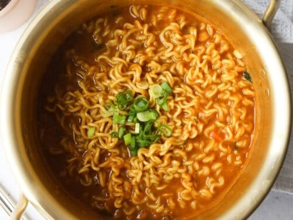

Broke Man's Ramen

Description
Broke Man's Ramen is a recipe I came up with on a chilly winter night
when I didn't have much time or energy or money to make a "proper" dish. It is a simple,
but delicious, take on dressing up instant ramen to make it more filling
and more palatable. Can easily feed a family of five!
Ingredients
- 3 Packs of Maruchan ramen
- Chicken Broth
- Chicken Stock
- Water
- One Half of a Decent Size White Onion
- 3 Cloves of Garlic
- One Chicken Breast
- Salt
- Pepper
- Garlic Powder
- Onion Powder
- Ground Ginger
- Hoisin Sauce
- Teriyaki Sauce
- Soy Sauce
Now listen, I didn't really use measurments when I made this dish,
so just season it to your tastes. I'll give you a rough idea of how much
I used in the directions below, but feel free to change it up!
Directions
- In a brazier on the stovetop, put about a half cup to a cup of chicken
broth. Also put about a cup to a cup and a half of chicken stock.
- Start heating it up over medium heat
- Add some ground ginger (I usually cover about half of the surface of the broth),
4 small dollops of cold thick hoisin sauce, and three Maruchan ramen flavoring packets
Note: do not do this all at once, I know it's step "3" but this is something you incorporate
slowly over the course of cooking the dish. And taste test after adding each ingredient so you
have an idea of how the flavors are changing as we move along!
- Very finely slice your onion
- Roughly mince your three cloves of garlic
- Toss the onion and garlic into the broth mixture when you're done cutting them up. (you'll
want the flavors conglomerating ASAP)
- Take your defrosted chicken breast and season both sides liberally with fresh cracked salt, fresh cracked pepper,
garlic powder, and onion powder. I also used some of the ground ginger here but really not much as I was not sure
how it would taste. Experiment away though.
Note: I air fry my chicken breast, I find it to be a quick and easy way of getting the job
done. 375 degrees Fahrenheit for 20 minutes. 10 minutes on each side netted me a perfect 165
tender and incredibly juicy chicken breast.
- Wait for stuff to cook. Reduce the heat of the broth gradually over time until you have a nice low simmer. Once you
hit the midpoint between low and medium go ahead and cover it up.
- Now we will toss 4 cups of water into another brazier or really any pot big enough for it and lets bring tha water to
a boil.
- Once your chicken is done cooking CHECK THE TEMP!!! shred it in a mixing bowl. Sometimes, if I taste the chicken
and the flavor is not really where I want it, I will add some more of the seasonings used initially until I am satsfied with
it.
- Add a small bit of teriyaki and soy sauce to the chicken and toss it like a salad.
- Now we will add the ramen to the water, which is hopefully boiling by now.
- Cook the ramen for TWO MINUTES AND FOURTY-FIVE SECONDS, trust me. Don't go over that time limit.
- Get yourself and whomever you may be serving some bowls, ladle the broth in first, then add your noodles, and then top it off
with your chicken.
- And that's it! Enjoy!
There it is! You've got yourself a bowl of Broke Man's Ramen. Keep in mind this dish was put together very haphazardly and not at
all with genuine cohesiveness in mind. So feel free to make adjustments, change the ingredients, change the order, and just make it
for you. But most importantly have fun with it.
Hope you enjoy the meal! Bye-bye!